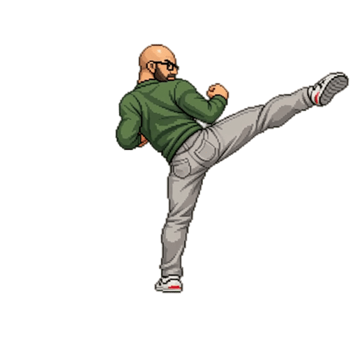
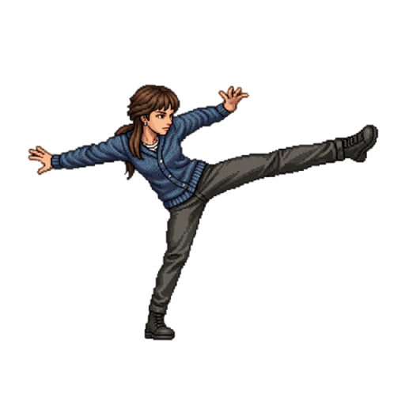
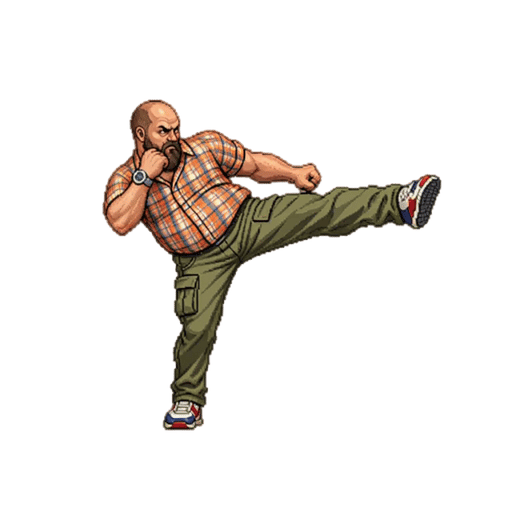
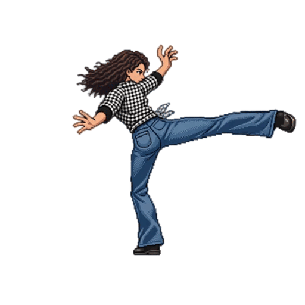
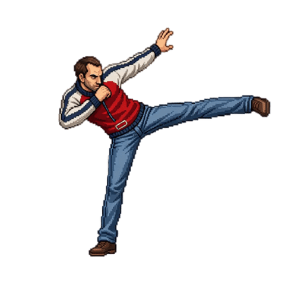
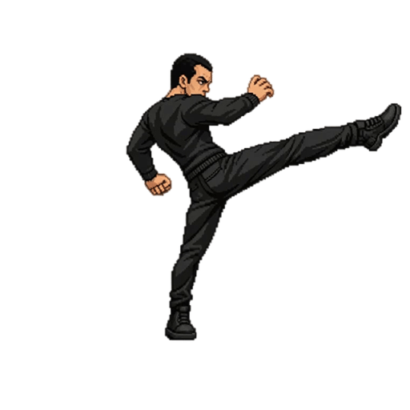
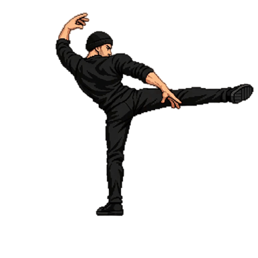
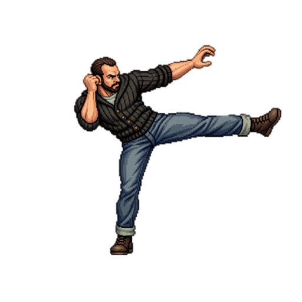
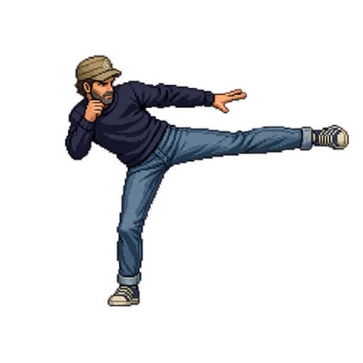

Timing Calcio medio
Aggiornamento: 2026-11-20. Integrati 9 personaggi. Il frame selezionato di massima estensione inizia a 500 ms (0,5 s) e il ciclo completo dura 800 ms (0,8 s) a velocità 1x.
Preparazione: 500 ms. Fase di impatto/recupero: 300 ms. Le durate dei fotogrammi variano nelle due fasi per sincronizzare le pose. Quando la gamba resta estesa per più fotogrammi, il marcatore identifica una posa rappresentativa del tratto di massima estensione: le pose adiacenti possono essere simili.
Riproduzione avanti fino all’ultimo frame del taglio salvato, poi ritorno al contrario senza duplicare il vertice. Il frame di impatto è l’ultimo della fase di andata; il ritorno completa la guardia iniziale. Loop attivo per default e CRT condiviso.
Abbinamenti dal file primi-personaggi-da-cpmpletare.txt: medium kick v2 per Alberto, Fabio Clara, Pippo, Peppo, Oscar, Fra Tavarone e Marsan; medium kick per Sboz; light kick per Elisa. Le ultime versioni salvate e gli intervalli selezionati su AutoSprite sono conservati, senza alterare scala o pixel delle celle 512×512.
Piede d’appoggio stabilizzato direttamente nei PNG per ALBERTO, PEPPO, Oscar. Traslazioni intere in X/Y mantengono la suola sullo stesso punto, sia in andata sia nel ritorno; nessun ridimensionamento o taglio della sagoma. La posizione nel canvas è adattata per contenere il calcio completo. Offset e punti d’appoggio per Godot.
I frame della demo partono da 1 in tabella; gli indici sorgente partono da 0 nello sheet selezionato, anche quando già accorciato. FPS medio = numero di frame × 1000 / 800; le durate effettive sono negli atlas e nel catalogo, da trasferire anche in Godot.
| Personaggio | Posa scelta | Frame demo | Frame sorgente | Impatto | Preparazione / fase successiva | Totale | Durata frame prima / dopo | Provenienza e note |
|---|---|---|---|---|---|---|---|---|
| ALBERTO |  | 24 / 47 | 23 | 500 ms | 500 / 300 ms | 800 ms | 21.739 / 12.500 ms | cmworvu1c000e487qpw9glvthUltimo frame del taglio salvato come posa di impatto; ritorno al contrario senza duplicare il vertice. Piede d’appoggio stabilizzato tramite traslazioni intere dei frame, anche nel ritorno al contrario; nessun ridimensionamento o taglio. |
| Elisa |  | 16 / 31 | 15 | 500 ms | 500 / 300 ms | 800 ms | 33.333 / 18.750 ms | cmwnphzdy00fywdka7jgy101oUltimo frame del taglio salvato come posa di impatto; ritorno al contrario senza duplicare il vertice. Sorgente light kick associata al Calcio medio come indicato nel file personaggi. |
| FABIO-CLARA |  | 15 / 29 | 14 | 500 ms | 500 / 300 ms | 800 ms | 35.714 / 20.000 ms | cmwos3qji00b5an8bgrwqsbvuUltimo frame del taglio salvato come posa di impatto; ritorno al contrario senza duplicare il vertice. |
| FRA-TAVARONE |  | 14 / 27 | 13 | 500 ms | 500 / 300 ms | 800 ms | 38.462 / 21.429 ms | cmwos6djk0072au3g3cdlisgyUltimo frame del taglio salvato come posa di impatto; ritorno al contrario senza duplicare il vertice. |
| MARSAN |  | 13 / 25 | 12 | 500 ms | 500 / 300 ms | 800 ms | 41.667 / 23.077 ms | cmwosfth5001761zh1nplcjyaUltimo frame del taglio salvato come posa di impatto; ritorno al contrario senza duplicare il vertice. |
| Oscar |  | 14 / 27 | 13 | 500 ms | 500 / 300 ms | 800 ms | 38.462 / 21.429 ms | cmwosj816004261zhh9vefkynUltimo frame del taglio salvato come posa di impatto; ritorno al contrario senza duplicare il vertice. Piede d’appoggio stabilizzato tramite traslazioni intere dei frame, anche nel ritorno al contrario; nessun ridimensionamento o taglio. |
| PEPPO |  | 17 / 33 | 16 | 500 ms | 500 / 300 ms | 800 ms | 31.250 / 17.647 ms | cmwosld65007961zhelq3slytUltimo frame del taglio salvato come posa di impatto; ritorno al contrario senza duplicare il vertice. Piede d’appoggio stabilizzato tramite traslazioni intere dei frame, anche nel ritorno al contrario; nessun ridimensionamento o taglio. |
| PIPPO |  | 15 / 29 | 14 | 500 ms | 500 / 300 ms | 800 ms | 35.714 / 20.000 ms | cmwoso34d001strxw8mtzdu2zUltimo frame del taglio salvato come posa di impatto; ritorno al contrario senza duplicare il vertice. |
| SBOZ |  | 15 / 29 | 14 | 500 ms | 500 / 300 ms | 800 ms | 35.714 / 20.000 ms | cmworamrx007vnyqrzh4v0ttaUltimo frame del taglio salvato come posa di impatto; ritorno al contrario senza duplicare il vertice. |